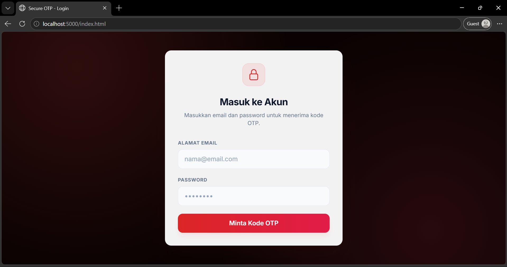
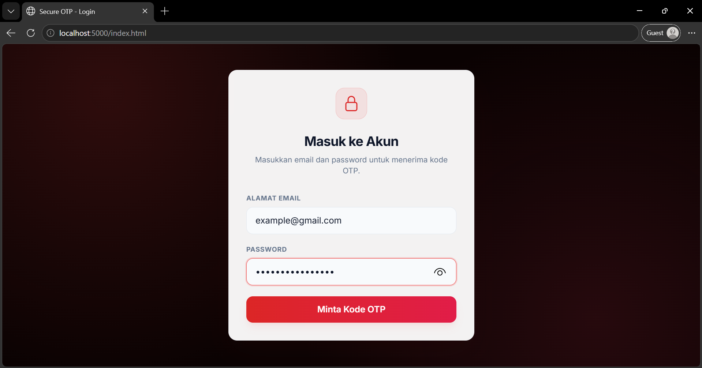
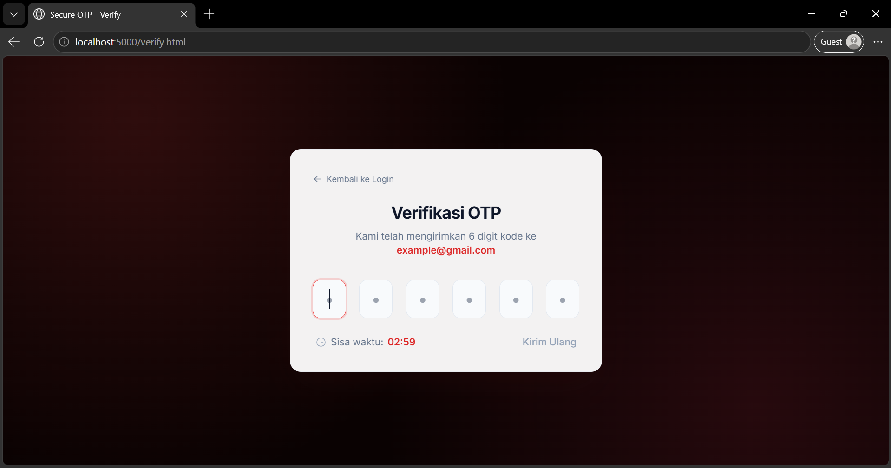
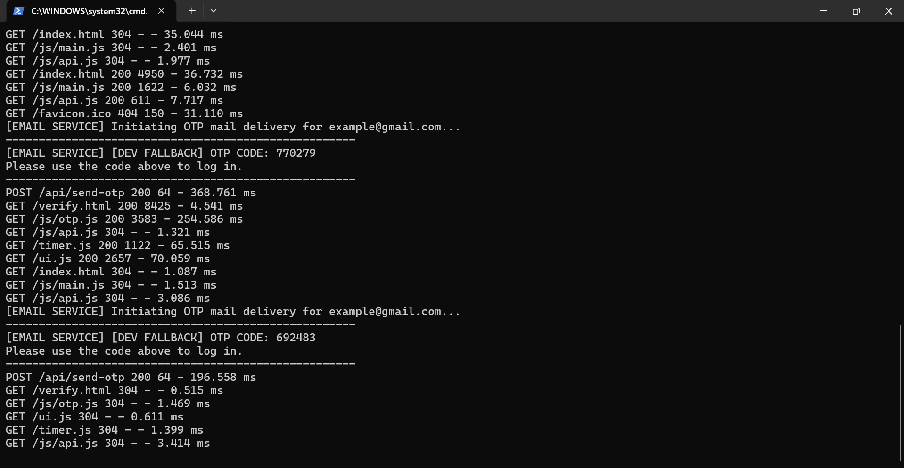

Personal Software Project • Security & Computing
Secure · Resilient · Single-Use
Project Overview: Developed a lightweight, highly resilient One-Time Password (OTP) verification backend and frontend service. Built as a self-taught, hands-on learning project to explore backend API architecture, database state management, rate limiting, and security best practices like bcrypt hashing and JWT generation. To guarantee zero uptime interruption during development, the system features an automatic local RAM memory fallback when Redis is offline. Nodemailer handles SMTP email dispatch, falling back to secure terminal logs in developer mode.
User submits email and password. Server validates details against stored credentials.
Server generates a cryptographically secure 6-digit random code.
The OTP is hashed using bcrypt and stored in Redis (TTL 3 minutes) or fallback RAM cache.
Nodemailer dispatches the code via SMTP or falls back to writing directly to the terminal console.
User enters code. Server verifies the hash, issues a JWT token, and deletes the OTP immediately.

Fig. 1a — Login Portal Interface

Fig. 1b — Credential Validation Input

Fig. 2a — 6-Digit Verification Code Entry Form

Fig. 2b — Developer Mode: OTP Code Printed directly to the Terminal console
Self-Guided Sandbox Setup: In dev mode, if SMTP credentials are left blank in the configuration, the system automatically falls back to printing the code directly to the console terminal. This makes testing fast, local, and accessible during early stages of building apps without setting up external mail relays.
Features an automatic local caching fallback. If the Redis server goes offline, the backend catches the failure and switches storage to an in-memory JS Map Cache, preserving identical expiration TTL limits.
Protects api points from spamming and brute-force attempts. Code generation is restricted to 3 requests per 3 minutes, and verification attempts are strictly capped at 5 attempts per 3 minutes.
Plaintext codes are never stored. The system hashes them on-the-fly using bcryptjs before writing to memory. Once successfully validated, the entry is immediately deleted.
The following Javascript snippet shows the custom fallback architecture ensuring the server does not crash if local Redis is offline:
// Local storage fallback map if Redis is not active const localStore = new Map(); async function saveOTPToCache(email, plaintextOtp) { const hashedOtp = await bcrypt.hash(plaintextOtp, 10); const ttlSeconds = 180; // 3 minutes TTL if (redisClient.isOpen) { await redisClient.setEx(`otp:${email}`, ttlSeconds, hashedOtp); } else { // Dev Fallback: Store in local RAM Map const expiresAt = Date.now() + (ttlSeconds * 1000); localStore.set(email, { hashedOtp, expiresAt }); } }
"As a Chemistry undergraduate student, my academic focus rests primarily on sustainable technologies, physical chemistry, and reactor modeling. However, my curiosity about the computational side of science led me to explore coding and software development. Building this OTP Secure System was one of my earliest self-taught experiments in building complete, secure web systems."
"Working on backend route handlers, handling local database connection failures, and protecting APIs from basic script attacks helped me understand the mechanics of secure authentication. This project serves as a key learning milestone in my personal programming journey, bridging my core scientific background with clean, resilient coding methodologies."